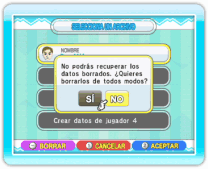

10 |
Guardado |
 |

Ambos juegos guardan automáticamente los datos al superar una fase, terminar un enfrentamiento o modificar las opciones de juego. Sin embargo, los ajustes de juego y los resultados de los Desafíos Wi-Fi con amigos no se guardarán (ver "Desafío Wi-Fi (Dr. Mario)"). Si quieres borrar a un jugador y sus datos, selecciónalo en la pantalla de selección de jugador y pulsa Nota: Si borras el Mii de un jugador del Canal Mii, los datos del jugador y su icono permanecerán en el juego.
|
 . A continuación pulsa SÍ para confirmar. Una vez que hayas borrado a un jugador, no podrás recuperar sus datos.
. A continuación pulsa SÍ para confirmar. Una vez que hayas borrado a un jugador, no podrás recuperar sus datos. |
 |
 |